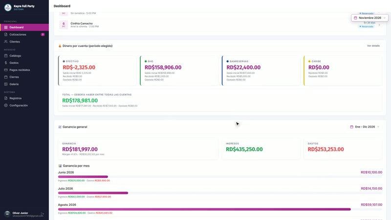
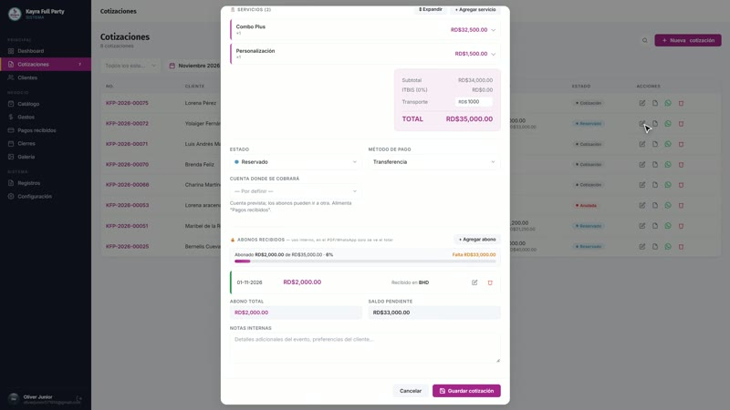
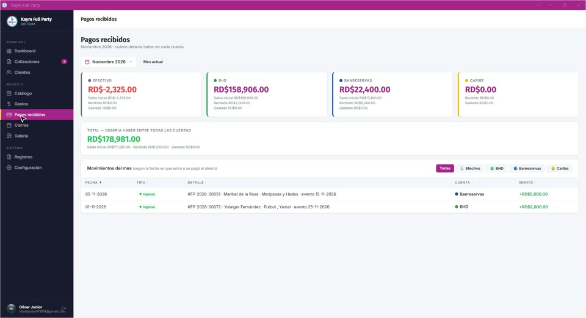
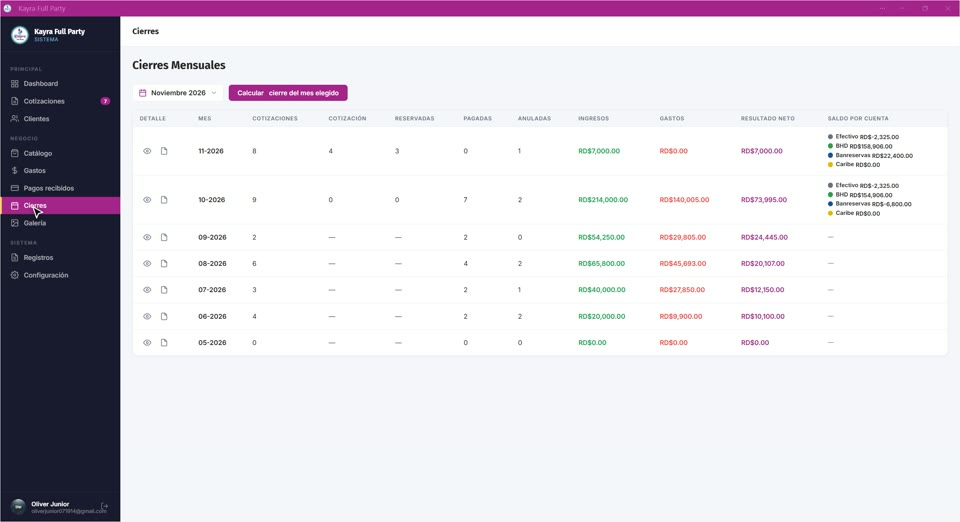

Kayra Full Party
Así funciona la app en la PC
1
Dashboard
Cobrado, gastos, beneficio y próximos eventos
2
Cotizaciones
Edita, genera PDF o envíalas por WhatsApp
3
Clientes
Tu lista de clientes con teléfono y dirección
4
Catálogo de servicios
Precio base, margen y precio final
5
Gastos
Lo que pagas en cada evento
6
Pagos recibidos
Dinero por cuenta: Efectivo, BHD, Banreservas, Caribe
7
Cierres mensuales
El resultado de cada mes
8
Galería
Las fotos de cada fiesta
9
Registros
Quién hizo qué y cuándo
10
Configuración
Correos autorizados, negocio y cuentas
De la cotización al cierre
Un evento de principio a fin
A
Nueva cotización
Cliente, fecha, hora, temática y festejado
B
Servicios del catálogo
Busca y agrega; el total se calcula solo
C
Reserva y abono
Estado, cuenta de cobro y abono recibido
D
Guardar
Queda creada con su número
E
Registrar un gasto
Vinculado al evento y a la cuenta que lo pagó
F
Pagos recibidos
El abono y el gasto ya aparecen en las cuentas
G
Cierre del mes
Un clic y el mes queda calculado
H
Dashboard al día
Cobrado, gastos y beneficio actualizados
Todo tu negocio, en un solo lugar
Kayra Full Party · en la PC y en el celular

Dashboard

Cotizaciones

Pagos recibidos

Cierres